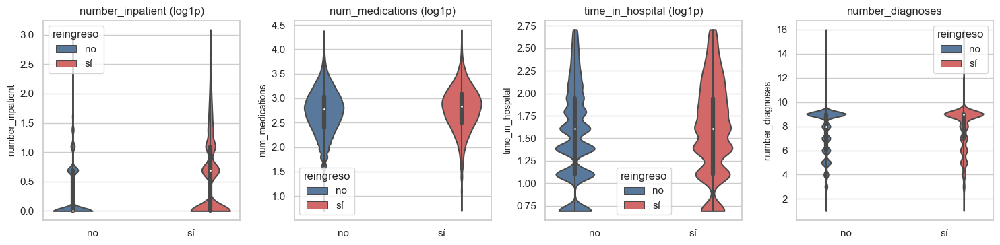
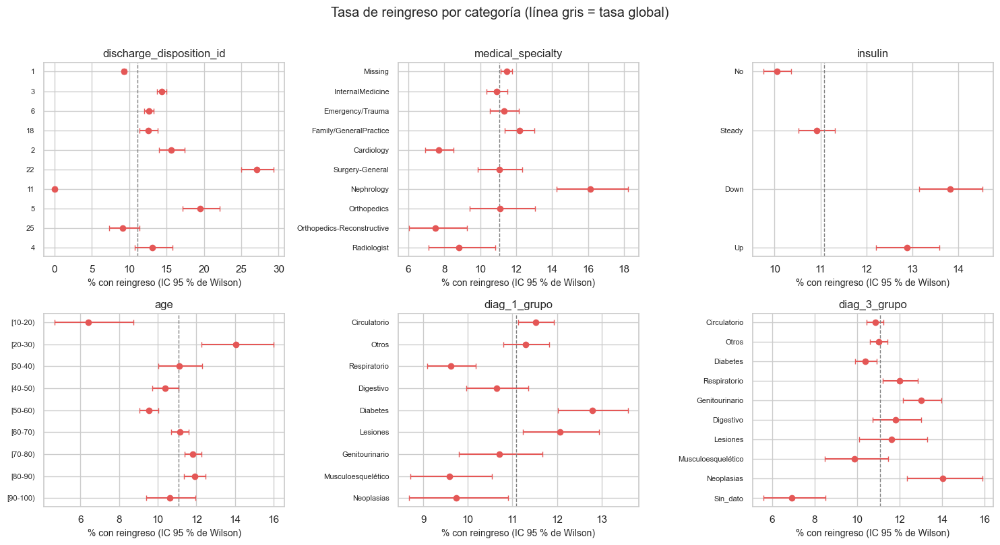
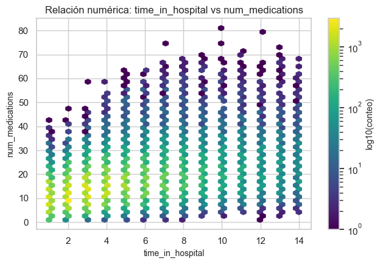
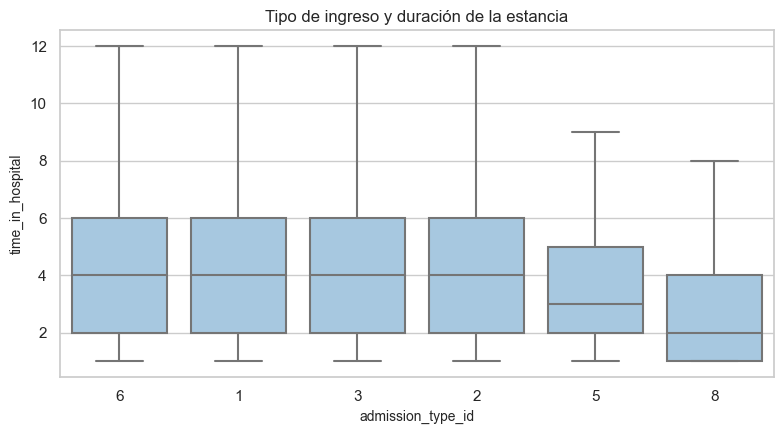
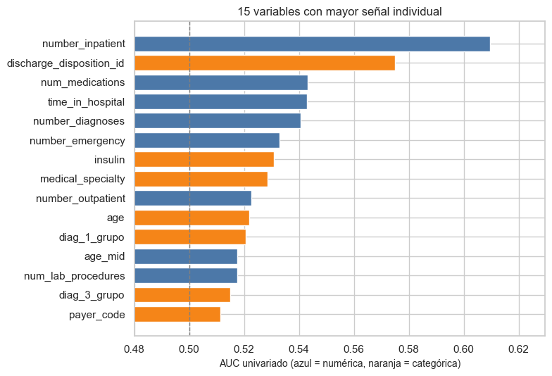

5. Análisis bivariado#
Se estudian relaciones numérica–numérica, categórica–numérica, categórica–categórica y predictora–target. Se combinan pruebas estadísticas, tamaños de efecto, FDR e información mutua. Los p-values no se interpretan de forma aislada debido al gran tamaño muestral.
from pathlib import Path
import re, sys, warnings
import numpy as np
import pandas as pd
import matplotlib.pyplot as plt
import seaborn as sns
from IPython.display import Markdown, display
project_root = Path.cwd().resolve()
while not (project_root / "_config.yml").exists():
if project_root.parent == project_root:
raise FileNotFoundError("No se encontró _config.yml. Ejecuta el notebook dentro de la carpeta del libro.")
project_root = project_root.parent
if str(project_root) not in sys.path:
sys.path.insert(0, str(project_root))
for _folder in ("tables", "figures"): # se crean si no existen
(project_root / _folder).mkdir(exist_ok=True)
from src.project_utils import *
configure_plots()
pd.set_option("display.max_columns", 80)
pd.set_option("display.width", 170)
pd.set_option("display.max_colwidth", 70)
TABLES = project_root / "tables"
def md_out(text):
display(Markdown(text))
train = load_train()
frame = prepare_frame(train)
num_cols, cat_cols = column_types(frame)
y = frame[TARGET]
Variables numéricas frente al objetivo#
rows = []
for c in num_cols:
a, b = frame.loc[y == 1, c].dropna(), frame.loc[y == 0, c].dropna()
u, p = stats.mannwhitneyu(a, b, alternative="two-sided")
auc = u / (len(a) * len(b))
r_pb = stats.pointbiserialr(y, frame[c].fillna(frame[c].median()))[0]
rows.append({"variable": c, "media con reingreso": a.mean(), "media sin reingreso": b.mean(),
"diferencia": a.mean() - b.mean(), "AUC univariado": max(auc, 1 - auc),
"rank-biserial": 2 * auc - 1, "punto-biserial": r_pb, "p_valor": p})
num_vs = pd.DataFrame(rows)
num_vs["p_fdr"] = fdr_bh(num_vs["p_valor"])
num_vs = num_vs.sort_values("AUC univariado", ascending=False).reset_index(drop=True)
num_vs.to_csv(TABLES / "numericas_vs_objetivo.csv", index=False)
display(num_vs.round(4))
top = num_vs.iloc[0]
md_out(f"La variable numérica más asociada es **{top['variable']}** (AUC univariado {es(top['AUC univariado'], 3)}; media {es(top['media con reingreso'], 2)} "
f"con reingreso frente a {es(top['media sin reingreso'], 2)} sin reingreso). "
f"**{int((num_vs['p_fdr'] < 0.05).sum())} de {len(num_vs)}** variables tienen diferencia significativa tras la corrección FDR, pero "
+ (f"{'ninguna' if (num_vs['AUC univariado'] >= 0.55).sum() == 0 else 'solo ' + str(int((num_vs['AUC univariado'] >= 0.55).sum()))} supera un AUC de 0,55: los efectos individuales son **pequeños**."
if num_vs['AUC univariado'].max() < 0.65 else "hay variables con un efecto individual apreciable."))
| variable | media con reingreso | media sin reingreso | diferencia | AUC univariado | rank-biserial | punto-biserial | p_valor | p_fdr | |
|---|---|---|---|---|---|---|---|---|---|
| 0 | number_inpatient | 1.2531 | 0.5609 | 0.6922 | 0.6096 | 0.2192 | 0.1706 | 0.0000 | 0.0000 |
| 1 | num_medications | 16.9630 | 15.9169 | 1.0461 | 0.5431 | 0.0861 | 0.0403 | 0.0000 | 0.0000 |
| 2 | time_in_hospital | 4.7330 | 4.3536 | 0.3794 | 0.5429 | 0.0858 | 0.0399 | 0.0000 | 0.0000 |
| 3 | number_diagnoses | 7.6910 | 7.3877 | 0.3033 | 0.5406 | 0.0811 | 0.0492 | 0.0000 | 0.0000 |
| 4 | number_emergency | 0.3723 | 0.1770 | 0.1953 | 0.5328 | 0.0656 | 0.0638 | 0.0000 | 0.0000 |
| 5 | number_outpatient | 0.4449 | 0.3583 | 0.0866 | 0.5226 | 0.0451 | 0.0215 | 0.0000 | 0.0000 |
| 6 | age_mid | 66.7732 | 65.8719 | 0.9013 | 0.5176 | 0.0353 | 0.0177 | 0.0000 | 0.0000 |
| 7 | num_lab_procedures | 44.1465 | 42.9453 | 1.2012 | 0.5176 | 0.0352 | 0.0191 | 0.0000 | 0.0000 |
| 8 | num_procedures | 1.2788 | 1.3477 | -0.0689 | 0.5060 | -0.0120 | -0.0127 | 0.0489 | 0.0489 |
La variable numérica más asociada es number_inpatient (AUC univariado 0,610; media 1,25 con reingreso frente a 0,56 sin reingreso). 9 de 9 variables tienen diferencia significativa tras la corrección FDR, pero solo 1 supera un AUC de 0,55: los efectos individuales son pequeños.
top4 = num_vs["variable"].head(4).tolist()
muestra = frame # visualización con todo training; no se altera la distribución
fig, axes = plt.subplots(1, 4, figsize=(15, 3.8))
for ax, c in zip(axes, top4):
d = pd.DataFrame({"reingreso": muestra[TARGET].map({0: "no", 1: "sí"}), c: np.log1p(muestra[c].clip(lower=0)) if frame[c].skew() > 1 else muestra[c]})
sns.violinplot(data=d, x="reingreso", y=c, hue="reingreso", legend=False, cut=0, ax=ax, palette=["#4c78a8", "#e45756"], order=["no", "sí"], hue_order=["no", "sí"])
ax.set_title(c + (" (log1p)" if frame[c].skew() > 1 else "")); ax.set_xlabel("")
plt.tight_layout(); save_figure(fig, "05_violines_numericas.png"); plt.show()

Variables categóricas frente al objetivo#
Para cada categórica: χ² de independencia y V de Cramér con corrección de sesgo (0 = independientes; 1 = asociación perfecta). Los códigos de diagnóstico crudos se sustituyen por sus grupos clínicos; las medicaciones casi constantes se conservan en la tabla.
cats = [c for c in cat_cols if c not in ("diag_1", "diag_2", "diag_3")]
rows = []
for c in cats:
v, chi2, p = cramers_v(frame[c], y)
rows.append({"variable": c, "niveles": frame[c].nunique(dropna=True), "V de Cramér": v, "chi2": chi2, "p_valor": p})
cat_vs = pd.DataFrame(rows)
cat_vs["p_fdr"] = fdr_bh(cat_vs["p_valor"])
cat_vs = cat_vs.sort_values("V de Cramér", ascending=False).reset_index(drop=True)
cat_vs.to_csv(TABLES / "categoricas_vs_objetivo.csv", index=False)
display(cat_vs.head(15).round(4))
md_out(f"Las categóricas más asociadas son " + ", ".join(f"**{r.variable}** (V = {es(r['V de Cramér'], 3)})" for _, r in cat_vs.head(3).iterrows()) +
f". **{int((cat_vs['p_fdr'] < 0.05).sum())} de {len(cat_vs)}** son significativas tras FDR; "
f"{'ninguna' if (cat_vs['V de Cramér'] >= 0.10).sum() == 0 else 'solo ' + str(int((cat_vs['V de Cramér'] >= 0.10).sum()))} tiene V ≥ 0,10 (asociación moderada o mayor).")
| variable | niveles | V de Cramér | chi2 | p_valor | p_fdr | |
|---|---|---|---|---|---|---|
| 0 | discharge_disposition_id | 26 | 0.1186 | 1170.9809 | 0.0000 | 0.0000 |
| 1 | medical_specialty | 70 | 0.0516 | 286.8979 | 0.0000 | 0.0000 |
| 2 | insulin | 4 | 0.0419 | 145.8667 | 0.0000 | 0.0000 |
| 3 | age | 10 | 0.0329 | 96.9153 | 0.0000 | 0.0000 |
| 4 | diag_1_grupo | 10 | 0.0281 | 73.5095 | 0.0000 | 0.0000 |
| 5 | diag_3_grupo | 10 | 0.0278 | 71.8661 | 0.0000 | 0.0000 |
| 6 | payer_code | 17 | 0.0270 | 76.2382 | 0.0000 | 0.0000 |
| 7 | diabetesMed | 2 | 0.0255 | 53.7694 | 0.0000 | 0.0000 |
| 8 | metformin | 4 | 0.0218 | 41.8360 | 0.0000 | 0.0000 |
| 9 | diag_2_grupo | 10 | 0.0194 | 39.6637 | 0.0000 | 0.0000 |
| 10 | A1Cresult | 4 | 0.0190 | 32.4277 | 0.0000 | 0.0000 |
| 11 | admission_source_id | 17 | 0.0186 | 44.2314 | 0.0002 | 0.0005 |
| 12 | change | 2 | 0.0181 | 27.6437 | 0.0000 | 0.0000 |
| 13 | race | 5 | 0.0153 | 23.9523 | 0.0002 | 0.0006 |
| 14 | admission_type_id | 8 | 0.0121 | 18.8358 | 0.0087 | 0.0215 |
Las categóricas más asociadas son discharge_disposition_id (V = 0,119), medical_specialty (V = 0,052), insulin (V = 0,042). 16 de 39 son significativas tras FDR; solo 1 tiene V ≥ 0,10 (asociación moderada o mayor).
top_cat = cat_vs["variable"].head(6).tolist()
base = y.mean()
fig, axes = plt.subplots(2, 3, figsize=(15, 8))
for ax, c in zip(axes.ravel(), top_cat):
t = rate_table(frame[c], y, min_n=200, top=10)
if c == "age": # las edades se ordenan por rango, no por frecuencia
t = t.sort_values("categoria", key=lambda s: s.str.extract(r"(\d+)")[0].astype(float))
t = t.iloc[::-1]
ax.errorbar(t["tasa"] * 100, range(len(t)), xerr=[(t["tasa"] - t["ic_inf"]) * 100, (t["ic_sup"] - t["tasa"]) * 100], fmt="o", color="#e45756", capsize=3)
ax.axvline(base * 100, color="gray", ls="--", lw=1)
ax.set_yticks(range(len(t))); ax.set_yticklabels(t["categoria"], fontsize=8)
ax.set_title(c); ax.set_xlabel("% con reingreso (IC 95 % de Wilson)")
plt.suptitle("Tasa de reingreso por categoría (línea gris = tasa global)", y=1.01)
plt.tight_layout(); save_figure(fig, "05_tasas_por_categoria.png"); plt.show()

Relaciones entre predictoras: ejemplos representativos#
Estos análisis complementan la relación con el target sin producir cientos de gráficos. Se usan todas las filas de training disponibles.
# Numérica vs numérica: par con mayor asociación monotónica.
corr_s = frame[num_cols].corr(method="spearman")
upper = corr_s.where(np.triu(np.ones(corr_s.shape), k=1).astype(bool)).stack()
num_a, num_b = upper.abs().idxmax()
pair = frame[[num_a, num_b]].dropna()
fig, ax = plt.subplots(figsize=(6.5, 4.5))
hb = ax.hexbin(pair[num_a], pair[num_b], gridsize=45, bins="log", mincnt=1, cmap="viridis")
fig.colorbar(hb, ax=ax, label="log10(conteo)")
ax.set(title=f"Relación numérica: {num_a} vs {num_b}", xlabel=num_a, ylabel=num_b)
plt.tight_layout(); save_figure(fig, "05_hexbin_numericas.png"); plt.show()
md_out(f"El par numérico con mayor |Spearman| es `{num_a}`–`{num_b}`: Pearson = {es(frame[num_a].corr(frame[num_b], method='pearson'), 3)} y Spearman = {es(corr_s.loc[num_a, num_b], 3)}. La diferencia entre ambas medidas ayuda a detectar relaciones monotónicas no estrictamente lineales.")

El par numérico con mayor |Spearman| es time_in_hospital–num_medications: Pearson = 0,469 y Spearman = 0,467. La diferencia entre ambas medidas ayuda a detectar relaciones monotónicas no estrictamente lineales.
# Categórica vs numérica: Kruskal-Wallis y epsilon cuadrado.
cat_demo, num_demo = "admission_type_id", "time_in_hospital"
demo = frame[[cat_demo, num_demo]].dropna().copy()
valid_levels = demo[cat_demo].value_counts()[lambda s: s >= 200].index
demo = demo[demo[cat_demo].isin(valid_levels)]
arrays = [g[num_demo].to_numpy() for _, g in demo.groupby(cat_demo, observed=False)]
h_kw, p_kw = stats.kruskal(*arrays)
k_kw, n_kw = len(arrays), len(demo)
epsilon2 = max(0.0, (h_kw - k_kw + 1) / (n_kw - k_kw))
fig, ax = plt.subplots(figsize=(8, 4.5))
sns.boxplot(data=demo, x=cat_demo, y=num_demo, showfliers=False, ax=ax, color="#9ecae9")
ax.set_title("Tipo de ingreso y duración de la estancia")
plt.tight_layout(); save_figure(fig, "05_categorica_numerica.png"); plt.show()
md_out(f"Kruskal–Wallis para `{num_demo}` según `{cat_demo}`: H={es(h_kw, 2)}, p={p_kw:.2e}, epsilon²={es(epsilon2, 3)}. La significancia se interpreta junto con epsilon², que cuantifica la magnitud práctica.")

Kruskal–Wallis para time_in_hospital según admission_type_id: H=304,71, p=9.73e-64, epsilon²=0,004. La significancia se interpreta junto con epsilon², que cuantifica la magnitud práctica.
# Categórica vs categórica: contingencia, chi-cuadrado y V de Cramér.
cat_a, cat_b = "change", "diabetesMed"
contingency = pd.crosstab(frame[cat_a], frame[cat_b], margins=True)
v_demo, chi_demo, p_demo = cramers_v(frame[cat_a], frame[cat_b])
display(contingency)
md_out(f"La relación `{cat_a}`–`{cat_b}` tiene χ²={es(chi_demo, 2)}, p={p_demo:.2e} y V de Cramér={es(v_demo, 3)}. V de Cramér, no solo el p-value, indica la intensidad de la asociación.")
| diabetesMed | No | Yes | All |
|---|---|---|---|
| change | |||
| Ch | 0 | 37663 | 37663 |
| No | 18745 | 25005 | 43750 |
| All | 18745 | 62668 | 81413 |
La relación change–diabetesMed tiene χ²=20.963,81, p=0.00e+00 y V de Cramér=0,507. V de Cramér, no solo el p-value, indica la intensidad de la asociación.
Ranking unificado de variables (selección preliminar)#
Para comparar numéricas y categóricas en la misma escala se calcula el AUC univariado de cada una: directo para las numéricas, y para las categóricas codificándolas con la tasa del objetivo calculada fuera de pliegue (por paciente), de modo que el AUC no sea optimista.
groups = frame[GROUP_COL]
rk = [{"variable": r["variable"], "tipo": "numérica", "AUC univariado": r["AUC univariado"]} for _, r in num_vs.iterrows()]
for c in cats:
if frame[c].nunique(dropna=True) <= 1:
continue
rk.append({"variable": c, "tipo": "categórica", "AUC univariado": categorical_auc_oof(frame[c], y, groups)})
ranking = pd.DataFrame(rk).sort_values("AUC univariado", ascending=False).reset_index(drop=True)
ranking.to_csv(TABLES / "ranking_univariado.csv", index=False)
display(ranking.head(15).round(4))
fig, ax = plt.subplots(figsize=(8, 5.5))
t = ranking.head(15).iloc[::-1]
ax.barh(t["variable"], t["AUC univariado"], color=np.where(t["tipo"] == "numérica", "#4c78a8", "#f58518"))
ax.axvline(0.5, color="gray", ls="--", lw=1); ax.set_xlim(0.48, max(0.6, t["AUC univariado"].max() + 0.02))
ax.set_xlabel("AUC univariado (azul = numérica, naranja = categórica)"); ax.set_title("15 variables con mayor señal individual")
plt.tight_layout(); save_figure(fig, "05_ranking_univariado.png"); plt.show()
md_out(f"La mayor señal individual es de **{ranking.loc[0, 'variable']}** con AUC {es(ranking.loc[0, 'AUC univariado'], 3)}. "
f"{'Ninguna' if (ranking['AUC univariado'] >= 0.60).sum() == 0 else 'Solo ' + str(int((ranking['AUC univariado'] >= 0.60).sum()))} supera 0,60. "
+ ("**Ninguna variable separa por sí sola las clases**: el problema es difícil y cualquier modelo tendrá que combinar muchas señales débiles."
if ranking.loc[0, 'AUC univariado'] < 0.75 else
"Hay variables con señal individual fuerte: se revisan en el capítulo 7 por si son fuga de datos."))
| variable | tipo | AUC univariado | |
|---|---|---|---|
| 0 | number_inpatient | numérica | 0.6096 |
| 1 | discharge_disposition_id | categórica | 0.5748 |
| 2 | num_medications | numérica | 0.5431 |
| 3 | time_in_hospital | numérica | 0.5429 |
| 4 | number_diagnoses | numérica | 0.5406 |
| 5 | number_emergency | numérica | 0.5328 |
| 6 | insulin | categórica | 0.5309 |
| 7 | medical_specialty | categórica | 0.5286 |
| 8 | number_outpatient | numérica | 0.5226 |
| 9 | age | categórica | 0.5219 |
| 10 | diag_1_grupo | categórica | 0.5207 |
| 11 | age_mid | numérica | 0.5176 |
| 12 | num_lab_procedures | numérica | 0.5176 |
| 13 | diag_3_grupo | categórica | 0.5151 |
| 14 | payer_code | categórica | 0.5113 |

La mayor señal individual es de number_inpatient con AUC 0,610. Solo 1 supera 0,60. Ninguna variable separa por sí sola las clases: el problema es difícil y cualquier modelo tendrá que combinar muchas señales débiles.
Información mutua#
La información mutua detecta dependencias potencialmente no lineales. Se calcula sobre todo training, sin usar test ni muestrear filas. Su escala no implica causalidad y se utiliza como ranking exploratorio.
from sklearn.feature_selection import mutual_info_classif
mi_rows = []
for c in num_cols:
values = frame[c].fillna(frame[c].median()).to_numpy().reshape(-1, 1)
value = mutual_info_classif(values, y, discrete_features=False, random_state=RANDOM_STATE)[0]
mi_rows.append({"variable": c, "tipo": "numérica", "información_mutua": value})
for c in cats:
values = pd.factorize(frame[c].astype("object").where(frame[c].notna(), "Missing"), sort=True)[0].reshape(-1, 1)
value = mutual_info_classif(values, y, discrete_features=True, random_state=RANDOM_STATE)[0]
mi_rows.append({"variable": c, "tipo": "categórica", "información_mutua": value})
mi_table = pd.DataFrame(mi_rows).sort_values("información_mutua", ascending=False).reset_index(drop=True)
mi_table.to_csv(TABLES / "informacion_mutua.csv", index=False)
display(mi_table.head(15).round(5))
md_out("Las mayores estimaciones corresponden a " + ", ".join(
f"`{r.variable}` ({r.información_mutua:.4f})" for _, r in mi_table.head(3).iterrows()
) + ". El ranking es complementario a AUC y V de Cramér; no demuestra efecto causal ni fuga.")
| variable | tipo | información_mutua | |
|---|---|---|---|
| 0 | number_diagnoses | numérica | 0.00904 |
| 1 | number_inpatient | numérica | 0.00773 |
| 2 | discharge_disposition_id | categórica | 0.00708 |
| 3 | num_lab_procedures | numérica | 0.00595 |
| 4 | num_medications | numérica | 0.00531 |
| 5 | time_in_hospital | numérica | 0.00455 |
| 6 | num_procedures | numérica | 0.00265 |
| 7 | number_emergency | numérica | 0.00255 |
| 8 | age_mid | numérica | 0.00231 |
| 9 | medical_specialty | categórica | 0.00194 |
| 10 | insulin | categórica | 0.00087 |
| 11 | age | categórica | 0.00067 |
| 12 | payer_code | categórica | 0.00052 |
| 13 | diag_1_grupo | categórica | 0.00045 |
| 14 | diag_3_grupo | categórica | 0.00045 |
Las mayores estimaciones corresponden a number_diagnoses (0.0090), number_inpatient (0.0077), discharge_disposition_id (0.0071). El ranking es complementario a AUC y V de Cramér; no demuestra efecto causal ni fuga.